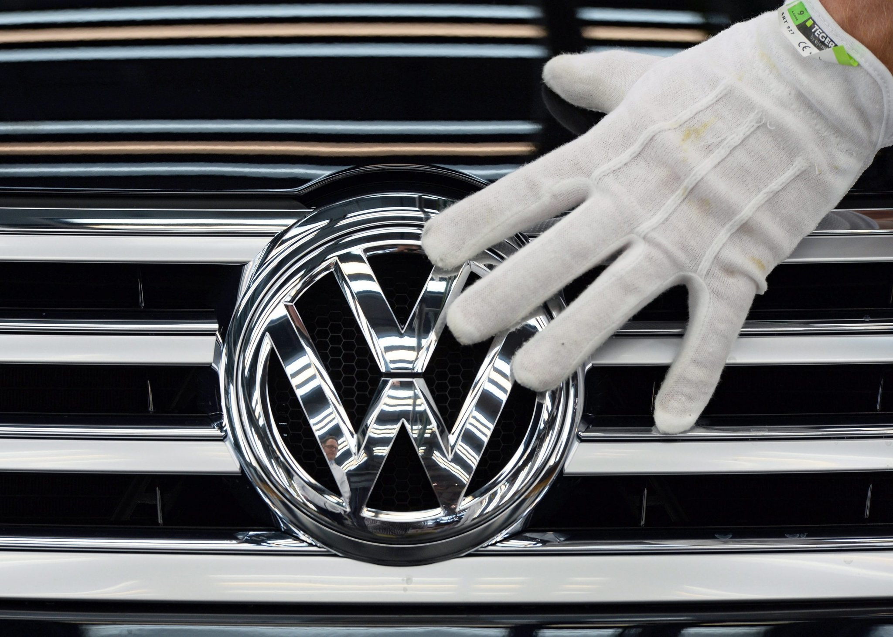

Volkswagen Inquiry's Focus to Include Managers Who Turned a Blind Eye
FRANKFURT — A widening internal investigation at Volkswagen is focusing not only on who was responsible for installing illegal software designed to fool emissions testers, but also on which managers may have learned of the deception and failed to take appropriate action, a person briefed on the inquiry said.
The failure of people inside the carmaker to sound warnings about illegal engine software has emerged as a crucial element of the scandal, in which 11 million cars were programmed to produce far fewer emissions during laboratory testing than they did under normal driving conditions.
The number of Volkswagen executives or engineers suspended in connection with the emissions cheating has continued to grow and could soon reach about 10, said the person, who spoke on the condition of anonymity because the inquiry is supposed to be confidential. Some of the employees were directly involved in programming cars to cheat on emissions tests, but others may share blame because they found out about it and did not pass the information up the chain of command.
Shareholder advocates and former employees have criticized what they said was a culture inside Volkswagen that centralized decision making at company headquarters in Wolfsburg, Germany, and discouraged open discussion of problems, creating a climate in which people may have been fearful of speaking up.
Volkswagen managers admitted to United States government and California regulators on Sept. 3 that cars with diesel engines were programmed to evade emissions tests.
Yet at least three members of Volkswagen’s supervisory board, which oversees the chief executive, have said they learned of the illegal software from media reports on Sept. 18, more than two weeks later. Shareholder representatives have criticized what they say was failure by Martin Winterkorn, then the chief executive, to keep them informed.
Authorities in the United States have not said which Volkswagen officials made the Sept. 3 confession, and it was not clear when Mr. Winterkorn first learned of the illegal software. Mr. Winterkorn said when he resigned on Sept. 23 that he had been “shocked” to learn of the deception and had committed no wrongdoing.
Jones Day, a United States law firm with offices in Germany, has been conducting an internal investigation on behalf of the Volkswagen supervisory board into who shares blame for the emissions scandal, which has thrown the company into turmoil and is likely to cost tens of billions of euros for recalls, official penalties and legal settlements with disgruntled owners.
During testing, software in so-called clean diesel engines activated emissions controls. At other times, the vehicles emitted up to 40 times the amount of nitrogen oxide, a harmful pollutant, allowed by rules in the United States. The software allowed Volkswagen vehicles to pass emissions tests without the usual trade-off in fuel economy and performance.
The Jones Day inquiry is likely to last for months and has not yet reached conclusions about which engineers or managers were responsible for installing the illegal software — it first appeared in cars from the 2009 model year — and which managers later learned about it but failed to take action.
Prosecutors in Braunschweig, a city near Volkswagen’s headquarters, are investigating whether any crimes were committed as part of the deception. A spokesman for prosecutors did not return calls seeking comment on Sunday.
Ansgar C. Rempp, the partner in charge of Jones Day in Germany, declined to comment on Sunday. A Volkswagen spokesman also declined to comment.
All of the executives who have been suspended so far were in senior positions related to engine or product development, including at least one who was not working at Volkswagen when the emissions cheating began.